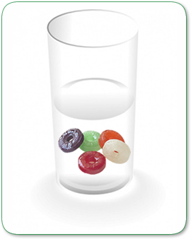

Introducción
Los azúcares como la glucosa, fructosa y sacarosa se acumulan especialmente en el jugo celular; los almidones son los carbohidratos de reserva y se encuentran en forma de plastidios; la hemicelulosa y pectinas son los polisacáridos que conforman el material estructural y las gomas son productos de desecho. Tradicionalmente las frutas se han valorado por su atractiva apariencia, textura, valor nutritivo y fundamentalmente por su sabor. En todos estos atributos de calidad los carbohidratos desempeñan un papel relevante, por ejemplo, el sabor está dado básicamente por un balance entre azúcares y ácidos orgánicos. El sabor característico de y diferente de las frutas se debe a la gran variación en composición y concentración de los azúcares; el color atractivo se debe principalmente a los glucósidos (antocianinas y antoxantinas) y la firmeza está determinada por los polisacáridos estructurales.
Objetivo
- Usaremos como reactivo el Fehling A y B.
1) Toma dos tubos de ensayos.
2) A uno agrégale agua, dos gotas de Fehling A y dos gotas de Fehling B.
3) Toma otro tubo de ensayo y agrégale agua, una pizca de glucosa y dos gotas de Fehling A y dos gotas de Fehling B.
4) Calienta el mechero de alcohol ambos tubos y observa si el color del alimento con reactivo permanece azul o se torna rojo ladrillo.

RESULTADOS Y CONCLUSIONES
Si toma color rojo ladrillo, contiene azúcar reductor.
Si se mantiene azul o verdoso, no contiene azúcares reductores.
Veamos que alimentos tienen esas sustancias.
El caramelo debe colorarse unos minutos en agua pura para obtener el jugo de caramelo, que le agregarás agua y reactivo.
